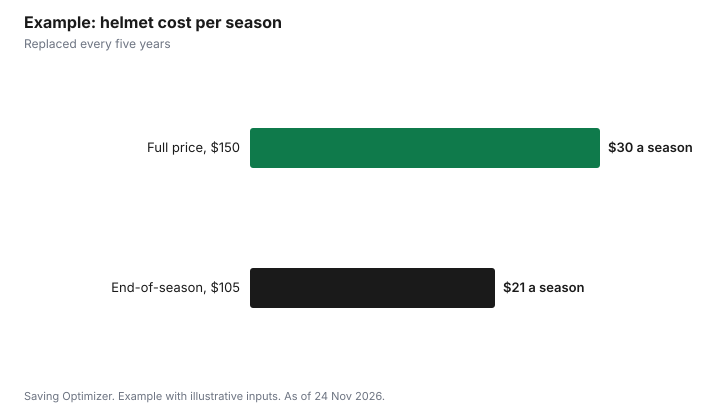

Sports · Canada
When to Replace a Ski Helmet: A Canadian Cost Guide

Replace a ski or snowboard helmet after any crash, fall or drop that hits it, even if it looks fine, and replace it once it's more than five years old. That's the guidance from Parachute, Canada's injury prevention charity. Don't buy second-hand helmets, look for a recognised certification, and save by buying at end-of-season sales or last year's colours.
Key takeaways
- Parachute: replace a helmet after it's dropped or after a fall or collision while wearing it, even if it looks undamaged (checked 24 Nov 2026).
- Replace any helmet over five years old; materials degrade.
- Second-hand helmets aren't recommended, because you can't know their history.
- Look for a certification such as ASTM F2040, CE EN 1077, CSA or Snell.
- Example: a $150 helmet replaced every five years costs $30 a season.
When to replace
| Sign | Replace? |
|---|---|
| Hit in a fall or collision | Yes, even if it looks fine |
| Dropped hard onto a hard surface | Yes |
| Over five years old | Yes |
| Cracks, dents or loose liner | Yes |
| Doesn't fit after adjustments | Yes |
Certifications
Look for a label showing a recognised standard, such as ASTM F2040, CE EN 1077, CSA or Snell RS-98. Some helmets add rotational impact systems such as MIPS. Fit matters as much as certification: snug, level, and not moving when you shake your head.
Buying for less
- End-of-season sales in March and April.
- Last year's colours and models.
- Check whether the brand has a crash replacement discount.
- Buy for fit first; a cheaper certified helmet that fits beats an expensive one that doesn't.
- Avoid used helmets, even from friends.
Plan: an example
These are example prices, not quotes. A $150 helmet replaced every five years costs $30 a season. Buying the same helmet at an example 30% end-of-season discount, $105, lowers it to $21 a season.

For other ski costs, see ski gear: buy, lease or rent, adult ski lessons and ski passes for 2026-27.
Sources
- Parachute, Helmets for winter activities (replacement guidance, second-hand helmets, certifications), checked 24 Nov 2026.
- Canadian Ski Council, Choosing a helmet (CEN 1077, ASTM F-2040, Snell RS-98), checked 24 Nov 2026.
Frequently asked questions
How often should I replace my ski helmet?
Parachute recommends replacing a helmet that's over five years old, and replacing it right away after a crash or drop.
Do I need a new helmet after a fall?
Yes, if the helmet was hit, even if it looks undamaged.
Is it safe to buy a used ski helmet?
It's not recommended, because you can't know if it's been in a crash.
What certification should a ski helmet have?
Look for ASTM F2040, CE EN 1077, CSA or Snell.
How can I buy a ski helmet for less?
Buy at end-of-season sales, choose last year's colours, and ask about crash replacement discounts.
Researched and drafted with AI assistance and fact-checked against official Canadian sources. How we create content.
Note: Safety guidance from Parachute; follow the helmet maker's instructions. Prices are examples. Education only.